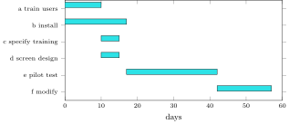

Definition
| Level | Definition |
|---|---|
| Programme | long-term initiative, usually several projects |
| Project | complex set of integrated activities with defined objectives, |
| schedule and budget, a start and an end, usually < 3 years | |
| Task | short-term effort that with others forms a project |
PMBOK: a project is a "temporary endeavour undertaken to create a unique product or service": unique, non-repetitive, specific objectives, well-defined duration, dedicated budget, schedule and organization that dissolves at the end. Features: clear start and end; each phase is input to the next; uncertainty on time and cost decreases as the project advances; constraints on resources, quality, budget and deadlines always present. Project management (PMBOK): applying knowledge, skills, tools and techniques to meet project requirements. Two aims: keep projects consistent with strategy; plan, control and run them. Contexts: construction, R&D/new products, software and IT, events (concerts, festivals, fairs).
Model
Four variables and the trade-off
| Variable | Content |
|---|---|
| Time (T) | durations, deadlines, milestones |
| Cost (C) | budget, direct and indirect costs |
| Resources (R) | people, materials, equipment |
| Quality (Q) | technical specifications, requirements |
Resource constraints create trade-offs among time, cost and quality; traditionally PM focuses on time and cost under resource and quality constraints. Knowledge is a further asset: "If only HP knew what HP knows, we would be three times more productive" (Lew Platt, HP CEO).
Three phases
- Planning — define project, objectives, team.
- Scheduling — allocate people, money, resources to activities and set their relations.
- Control — monitor resources, costs, quality; revise plans.
Ex ante (planning and scheduling): objectives and scope, activities (WBS), time and resource estimates, precedences, budget. During (control and reporting): progress monitoring, planned vs actual, plan revision, resource shifts, reporting to management. Difficulty grows with scale (budget, people, activities), complexity (number and interrelation of activities and stakeholders) and uncertainty (what is known of requirements, technologies, outputs): a skyscraper is high scale/complexity; innovative pharmaceutical research is high uncertainty. A well-defined project states objectives (results, requirements, success criteria), scope (what is in and out, deliverables) and approach (methodology, phases, organization).
KPIs
Quantitative indicators defined in planning, monitored in execution, analysed at closure; good KPIs are SMART: specific, measurable, achievable, relevant, time-bound.
| Variable | KPIs |
|---|---|
| Time | SV, SPI, % milestones met, average activity delay |
| Cost | CV, CPI, burn rate (EUR/week), expected ROI, payback |
| Resources | utilization vs capacity, productivity, overtime, turnover |
| Quality | defect rate, % rework, customer satisfaction (CSAT, NPS), |
| % requirements met |
See earned value: SPI > 1 ahead of schedule, CPI > 1 under budget.
WBS and Gantt
Planning steps: identify activities → estimate times → identify dependencies → identify time/resource constraints → fix schedule and resources. WBS (divide et impera): hierarchical "family tree" breakdown of the project into phases and work packages (WP), the lowest level, each with clear inputs, outputs, resources and responsibility. Milestones: events marking completion of major deliverables; intermediate checkpoints. Gantt chart (Henry Gantt, c. 1910): bars for WPs over time, with start/end dates, summary elements and precedences ("B starts after A is complete") — an intuitive communication tool.
Worked example
Knowledge-management system for an insurer — "design the information interface for a new sales KM system":
| Phase | Work package | Days |
|---|---|---|
| Training | a Form and train user group | 10 |
| c Specify sales training | 5 | |
| Installation | b Install systems | 17 |
| d Design initial screen interface | 5 | |
| Testing | e Test interface in pilot area | 25 |
| f Modify interface | 15 |
The Gantt shows a and b starting at day 0, c and d after a (day 10), e after b and d (day 17), f after c and e (day 42), ending at day 57 — see critical path.
Pitfall
A project is not a process: it is unique and temporary. A WBS lists deliverable work, not a schedule; time comes with the Gantt/CPM.
Recall
Define programme/project/task and the PMBOK definition; list the four variables, three phases and three difficulty drivers; build the KM-system WBS.
Picture

Gantt of the KM system: the project ends on day 57.